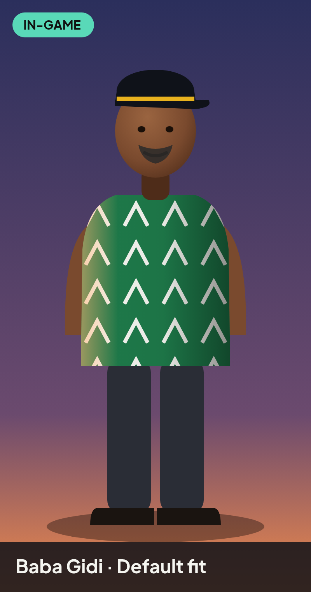
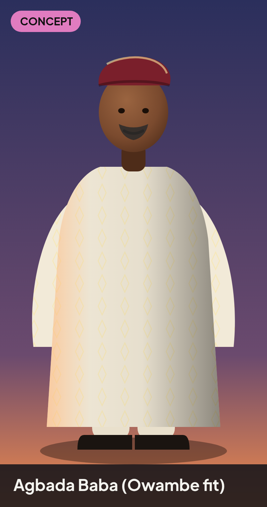
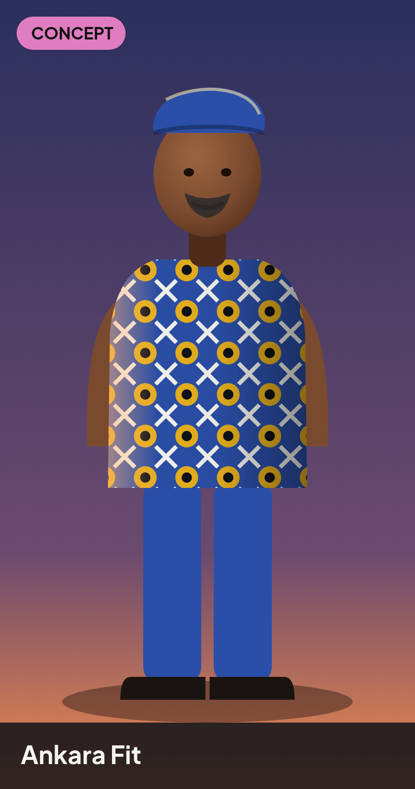
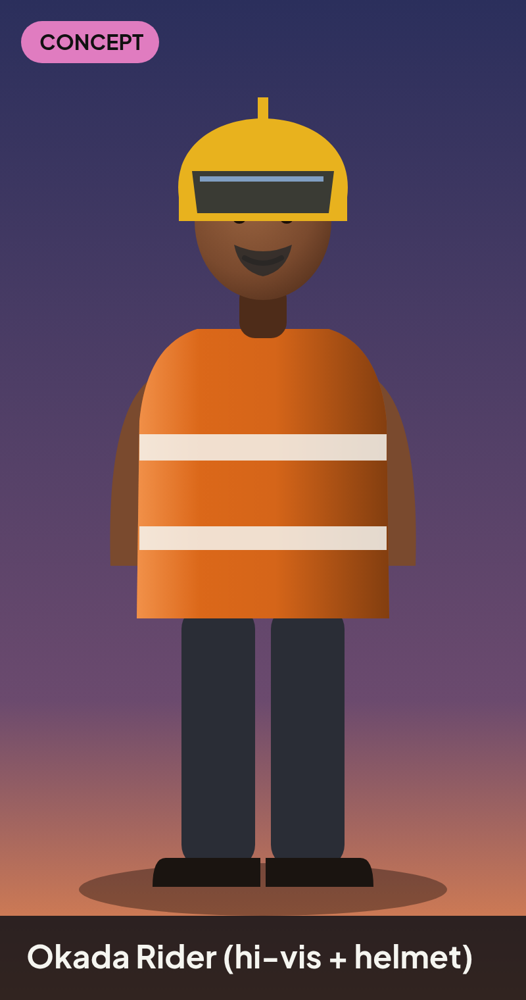
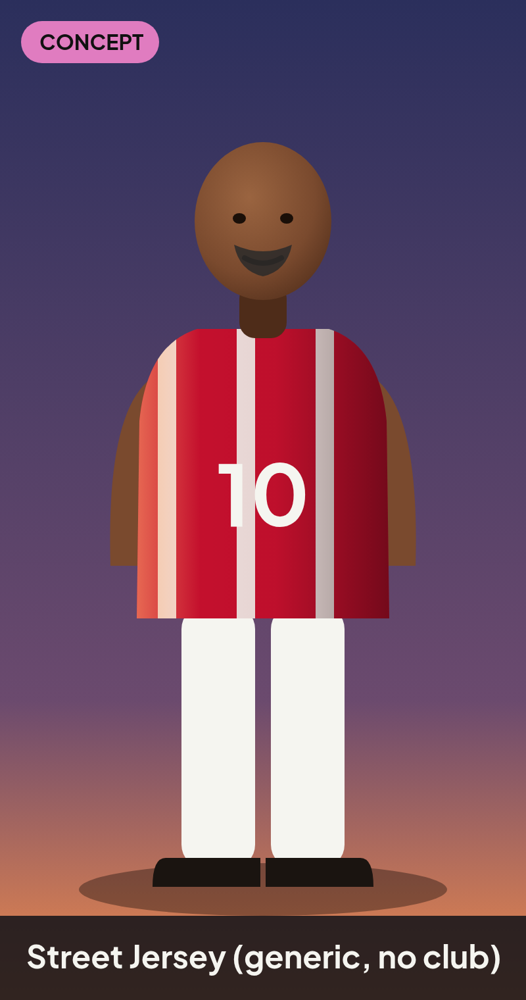
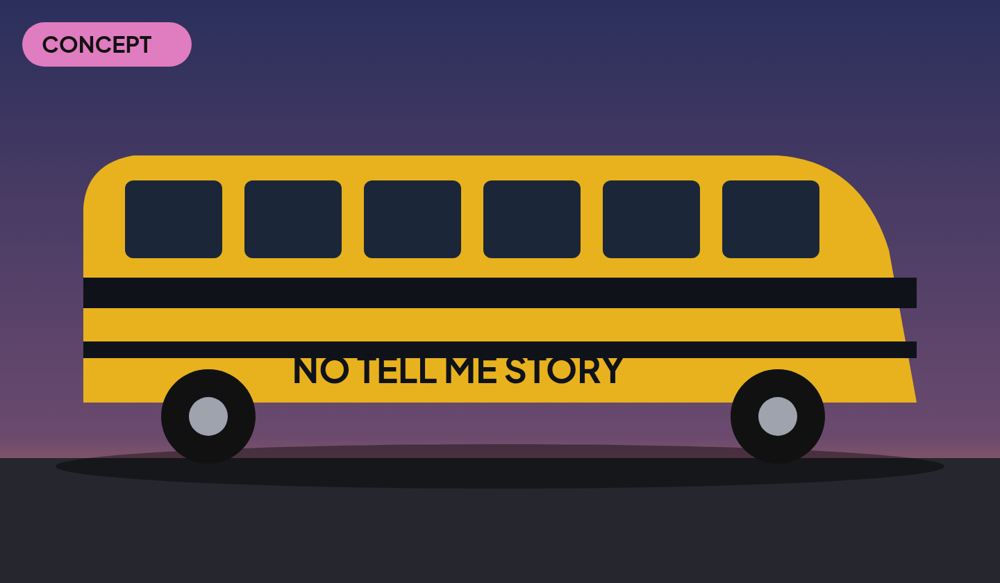
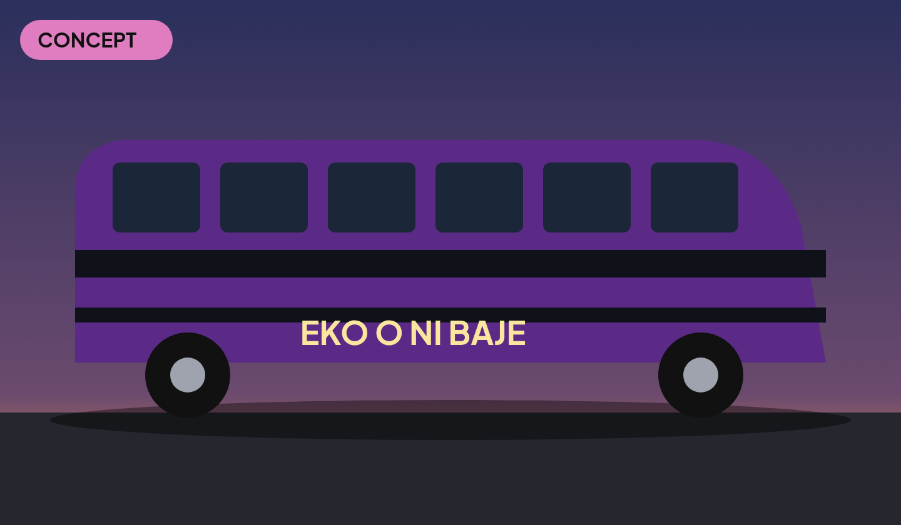
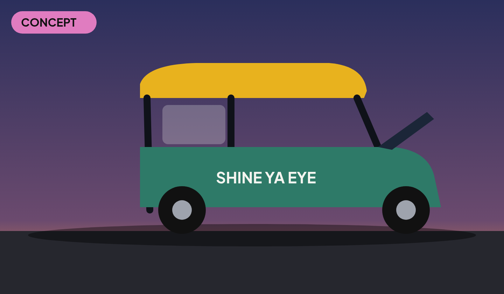
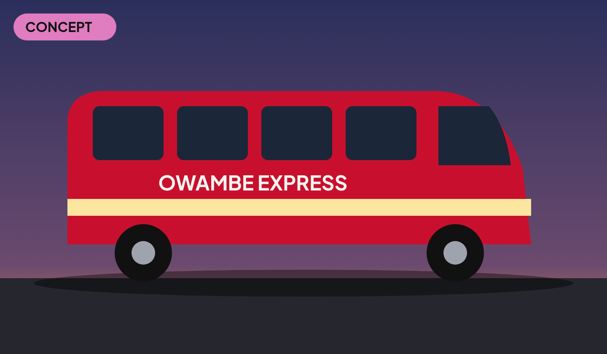

Costumes & skins
Drawn renders of every cosmetic named in the code and the vision brief. IN-GAME = the look that ships in the current build; CONCEPT = design proposal for a cosmetic SKU, not yet modelled. Cosmetics are vanity only: no power for cash (Storefront IA).
Sources. IAP SKUs in
GidiEconomyTables.IapSkus: pack_baba_fits (“Baba Fits”) and pack_skins_lagos (“Lagos Skins: danfo / keke / korope”, Storefront IA). Brief: Baba Gidi outfits agbada, okada helmet, Ankara fits, generic jerseys. Art guide: Baba Gidi needs a cap that reads from above and a bold shirt that stays visible on white walkways and dark asphalt. Prices come from the store: TBD. Which fits go in which pack: TBD.Baba Gidi fits (pack_baba_fits)


IN-GAME
base character

CONCEPT
pack_baba_fits

CONCEPT
pack_baba_fits

CONCEPT
pack_baba_fits

CONCEPT
pack_baba_fitsLagos Skins (pack_skins_lagos)
Vehicle paint jobs with fictional back slogans (no real brands).


CONCEPT
pack_skins_lagos

CONCEPT
pack_skins_lagos

CONCEPT
pack_skins_lagos

CONCEPT
pack_skins_lagosReadability rules
- Hat or helmet colour must contrast with both asphalt
#26272Eand walkway at the 65° camera. - Every fit keeps the same silhouette and Humanoid rig, so animations and hitbox don't change.
- Not costumes: Agbada Bigman, Corporate Slay Queen, commuters, LASTMA and KAI are in-game NPC archetypes (
PedestrianController,FactionAI).